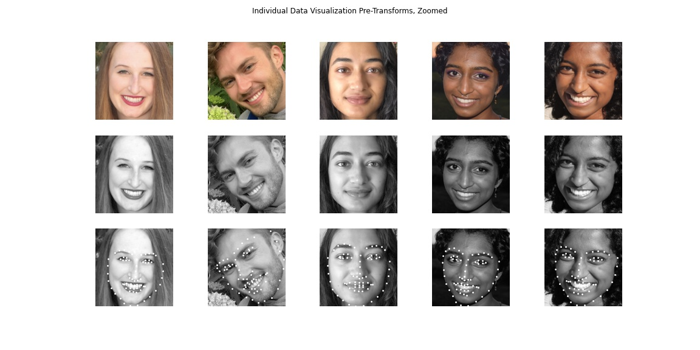
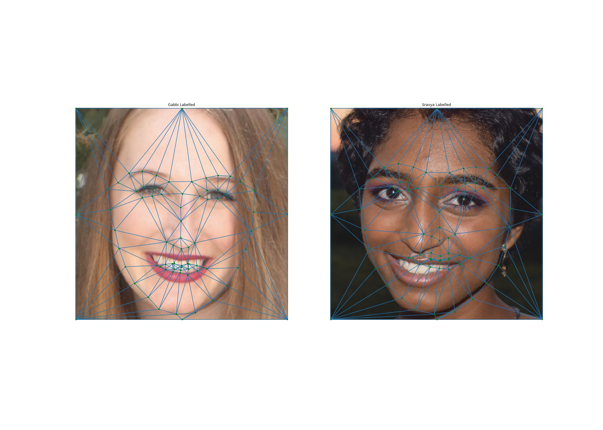

PROJECT 5: Facial Keypoint Detection with Neural Networks
Created by Sravya Basvapatri // CS 194-26 Fall 2021
Hi! This project explores using Neural Networks to detect points on the human face. In Parts 1 and 2, I use the IMM Face Database, consisting of 40 individuals and 240 portraits, to train and predict key points on the face. Then, in Part 3, I will strengthen my approach with a larger database.
Here's what we'll get to in the end: automatically detecting key points to morph between images easily!

Project Part 1: Nose Tip Detection
Data Loader Samples
Network Architecture
Varying Learning Rates
Varying Filter Size
Analyzing Results
Project Part 2: Full Face Detection
Data Loader Samples
Network Architecture and Losses
Improving the Model
Second Attempt Network Architecture + Analyzing Results
Third Time is the Charm + Analyzing Results
Visualizing Learned Filters
Part 3: Train With Larger Dataset
Network Architecture and Losses
Visualizing Results
Kaggle Test Set Results
Additional Sample Data
Bells and Whistles: Face Morphing Using Keypoints
Let's get started!
Part 1: Nose Tip Detection
To simplify the problem, I first start with predicting the location of the tip of the nose. The first 32 individuals and 6 views of each of their faces are used as my training set, and the remaining 8 are part of the validation set. This makes for 192 training images and 48 validation images. I approached the nose detection problem as a pixel coordinate regression problem. The input was a single grayscale image, and the output was a prediction of the nose tip position as an (x, y) coordinate.
Data Loader Samples
The first step to getting started was writing a dataloader to load in the data and apply the necessary transformations. Although the dataset provides 58 annotated keypoints, I only focused on the nose tip in this part.
After loading in the images, I then applied the transformations necessary to send these inputs through a NN. All images were converted to grayscale. I also converted all image values to be floats between -0.5 and 0.5 to aid in training, and shrunk the portrait sizes down to 60 x 80. I also apply a contrast normalization to help take advantage of my full range of representation in my neural network. In my first attempts, I did no further data augmentation, but applied this normalization to both my training and validation sets.
Network Architecture
The next step was writing the convolutional neural network that would hold the weight to predict the nose key points. My initial CNN has 3 convolutional layers and 2 fully connected layers, and follows the layout shown below.
To train my CNN, I used MSE loss as my prediction loss, the Adam optimizer, a learning rate of 1e-3, and a batch size of 8. Given that each individual has 6 photos, this ensures that each batch has different faces in it, rather than simply photos of the same person. I ran the training loop through 25 epochs on the dataset. After this first run, I found the following training and validation error over time. The error is measured as the mean squared pixel error for a single image. The predictions and labels range from 0-1, so the error magnitude is quite small.
Ending validation loss: 0.001350137870758772
Ending training loss: 0.000536642287139936
 Next, I visualized how these predictions looked on the faces. Below are the visualizations on the training and validation datasets, with ground truth in red and predictions in blue.
Next, I visualized how these predictions looked on the faces. Below are the visualizations on the training and validation datasets, with ground truth in red and predictions in blue.
Varying Learning Rates
I then played with some hyperparameters to see how they would affect the performance of my CNN and the losses during training. I started with adjusting the learning rate. Especially looking at our log plots, we can see that the losses don't fall smoothly, but rather experience bumps. A smaller learning rate would help fix that. However, using a learning rate of 1e-4 over 25 epochs, I found that the losses didn't come close to converging. In the semilog plot, we can see that the model still has room for improvement. However, we don't have the same unpredictable oscillations we saw with our first CNN's hyperparameters.
Ending validation loss: 0.004543898161500692
Ending training loss: 0.002245608062366955
Reducing the learning rate didn't work well for this model, because I'm limiting training to just 25 epochs. Instead, I speculated that perhaps a higher learning rate decreased over time could help drive us to a solution. To train my next model, I used a learning rate of 5e-3.
Ending validation loss: 0.0024231926072388887
Ending training loss: 0.002317866001249058
And below are the results on some of the training and validation data.I found that this kept error about the same on validation set but reduced it on the training set as compared to a learning rate of 1e-3. The oscillations indicate that the learning rate may have been a bit too high, so I stuck with my initial model with a learning rate of 1e-3. I then tried varying other hyperparameters, including batch size. I speculated that a batch size of 6 would reduce performance because every batch is tuned on the same face, and found that a batch size of 8 worked best.
Varying Filter Size
I also tried increasing the filter size. The following shows the new CNN with larger kernel sizes, trained over 25 epochs with a batch size of 8 and a learning rate of 1e-3.
Ending validation loss: 0.001876991824246943
Ending training loss: 0.0005328811172754891

I found that increasing the kernel size didn't have much of an effect on my training accuracy, although it did reduce prediction accuracy slightly.
First NN with 25 epochs & lr 1e-3:
Ending validation loss: 0.001350137870758772
Ending training loss: 0.000536642287139936
Larger Filter Size NN with 25 epochs & lr 1e-3
Ending validation loss: 0.001876991824246943
Ending training loss: 0.0005328811172754891
Since the first NN performed better (confirmed by comparing the two sets of results by eye), I decided to use that first network to analyze peformance:
Analyzing Results
Drawing from the test dataset, the network detects the nose tip almost perfectly for front-facing images and slight head rotations about the vertical axis. Below are two examples.
For the following two images, the model doesn't perform nearly as well. I belive this this is because the face is angled differently in every side-profile image, such that the nose looks different. In the both examples, the face is angled upward to reveal the nostrils. In the first image, we also have a significant shift leftward from the average location of the face in most of the images, which may have thrown the model off. Thus, more training data or data augmentation would help this be more accurate.
This part of the project was a really useful step to learn what effect tuning different hyperparameters has. The limit on training epochs allowed me to explore other ways of improving a model that isn't as time intensive, which is really critical when moving to larger datasets or more difficult prediction problems.
Part 2: Full Face Detection
In this section we want to move forward and detect all 58 facial keypoints/landmarks.
Data Loader Samples
The first step I took was adding additional data augmentation. Our training set is pretty small-- just 192 images of 32 different people, so it is easier to memorize that training data and not generalize well beyond it. To combat this, I augmented the samples by adding a color jitter, random rotation, and random shift along with the normalizations from before. I also used a larger image size than before, rescaling images to 120 x 160. Below are the transformations visualized on sample data.
Network Architecture and Losses
I first tried the following CNN, similar to the one I used for nose keypoints but with additional convolutional and fully connected layers.
In my training iteration below, I use a learning rate of 1e-3, a batch size of 8, and train over 400 epochs. The model trains in about 10 minutes locally.
Below are predictions on training data, but it is clear that the model isn't able to successfully predict points even after 400 epochs. I didn't include predictions on the validation set here because I first wanted to try to improve the model.
Improving the Model
Next, I attempted training on just 1 image to see if the model had the capacity to learn the points. I trained for 400 epochs using the same hyperparameters as above, and here were the results. It does okay at predicting the points, but given just one image, I would have expected better accuracy.
Second Attempt Network Architecture
Seeing that my training error plateaus rather than reaching 0, I decided that my CNN likely didn't have the capability to hold all the weight it needed for facial keypoint prediction. I also saw that validation error plataued well above the training error, indicating that there are issues with overfitting to the training data still, but not being able to generalize to the test data. At this point, I added an additional level of data augmentation by shifting images, and I decided to make my CNN bigger by adding larger layers. Below is the second version of my CNN and its performance. I used a learning rate of 5e-3, a batch size of 16, and trained for 400 epochs. I also added some dropout to drive the error lower in case it was getting stuck in a local minimum.
Below is the model's performance on the test and train data. I believe the model is learning to predict an average face, which must be a type of overfitting. To counter this, I experimented with more Normalizations and Dropouts. However, I didn't have much luck with this approach.
Analyzing Results
Next, I analyzed why my model might be performing the way it is. From the above examples, the model does okay on the first training example (row 0 col 0), but not when the face is turned. I believe it does well on this image because the face is positioned in the center, close to where the average face is for most images. From the validation set, it does poorly on all the examples in the first row. I believe this is because the face for this person is a bit shifted from most of the examples in the training set. Similarly, the first two examples in the third row perform poorly, likely because the face is oriented differently than most of our training examples, slightly downwards.
Third Time is the Charm
Following advice from OH, the internet, and from fellow students, I decided to shrink my network instead of enlarge it. The first two models seemed almost input-blind, predicting about an average face no matter what the input image was.
Under the assumption that the FC layers were making the model learn an "average face" rather than predict based on the image, I simplified my third model with a single fully connected layer. For my data augmentations, I applied a random shift and a random rotation, as well as rescaled and normalized the images.
I trained for 100 epochs with a batch size of 16, and a learning rate of 1e-4. The smaller learning rate was intended to ensure that each iteration didn't sway the weight too much, which seemed to be the case when I visualized a single face being trained.
Below is the model's performance on the test and train data, which looks much better than the first two attempts.

Analyzing Results
Finally, I analyzed results from my final model. For the following two examples, the model does a good job of predicting, which I believe is because most of our training data is front facing. The model generally performs better on these front facing images.
However, on the bottom two, the model doesn't perform nearly as well. I believe this might be due to a difference in lighting (especially for the left image), as well as a more drastic angle of the face. To improve this, adding a color/brightness jitter to the training set may help, as well as perhaps training more on the samples with turned faces.
Visualizing Learned Filters
Below, I visualized the filters from the convolutional layer 1 of my network. It consists of 1 in_channels and 32 out_channels, so the visualizations shows 32 5x5 kernels.
.jpg)
Part 3: Train With Larger Dataset
In this last part, I moved to a larger training set and employed a pre-trained residual network, ResNet18. The first step was writing the dataloader, which had its challenges given some inconsistencies in the training set. The images were not all the same size as before, and the images were not portraits. Rather, the annotated faces in each image were in different places, with the location provided by a square bounding box. Additionally, some of the annotated landmarks fell outside the bounding boxes, so my data cleaning needed to account for that by enlarging the bounding boxes such that parts of the image containing landmarks wouldn't be cropped out. Below is the data before transformations, but after the initial data cleaning.
Next, I applied the same transforrms as in part 2 of the project, which are shown below on sample data from the ibug dataset.
Network Architecture and Losses
For my network architecture, I started with the pre-trained resnet18 model, which is a residual neural network that passes information between multiple layers to improve predictions. After importing this model, I then needed to adjust the first convolutional layer to have a single input channel, since our keypoint detection takes in black and white images. I also adjusted the output fully connected layer to output 2 * 68 = 136 points to account for the 68 facial keypoints that we were trying to predict. I started with a learning rate of 1e-3 and trained for 10 epochs, like the staff solution. As before, I used MSE Loss and used Adam as my optimizer. Below is the resulting training and validation loss from this architecture.
Visualizing Results
I then plotted the results on some samples from the training and validation set, shown below. I was suprised by how well the validation set predicted, and how validation error was sometimes lower than the training error. However, at the end, I realized that this is likely because of the soemtimes drastic transforms and shifts applied to the training data that can take the points outside of the prediction range of the image.
Kaggle Test Set Results
I also plotted results on some addition samples from the test set designed for the course Kaggle competition. Here is a visualization of those prediction, on the training size images, and then on the original size images.
My model trained for 10 epochs acheived a score of 10.78117 on Kaggle, listed under "Sravya Basvapatri".
Additional Sample Data
After, I wanted to see how the model would perform on my own images, so I loaded in the following 5 faces to attempt keypoint detection! Here are the results on those images. Since I didn't have bounding boxes for these images, I manually cropped them to limit the prediction to just the face. I attempted this twice. In my first attempt, I found that the cropping was extremely important-- the model wasn't very good at predicting landmarks on faces that were even slightly zoomed out. In the second attempt, I zoomed in more, to reflect the zoom on the training data.
Bells and Whistles: Face Morphing Using Keypoints
Now that we have a network that automatically detects key points for us, it's much easier to do face morphing! I revisited my project 3 code to apply face morphing on some of the same and more images. As a reference, my project 3 code can be found here.
Project 3 CodeI started by using the neural network to predict points. I needed to ensure that all images were square, grayscale inputs, but I could then map the keypoint locations back to do face morphing in color. Since we will be performing triangulation to morph the images, I also added additional points at the corners and edge midpoints of each image. This ensures that we're not just morphing the face.
Below, I display some examples of the triangulated predicted keypoints.
Next, here are some examples of the morphed images using NN predicted keypoints. They aren't quite as clean as the hand labelled predictions from project 3, but much much easier to make!
Finally, here is a cool gif I created of myself over the years!